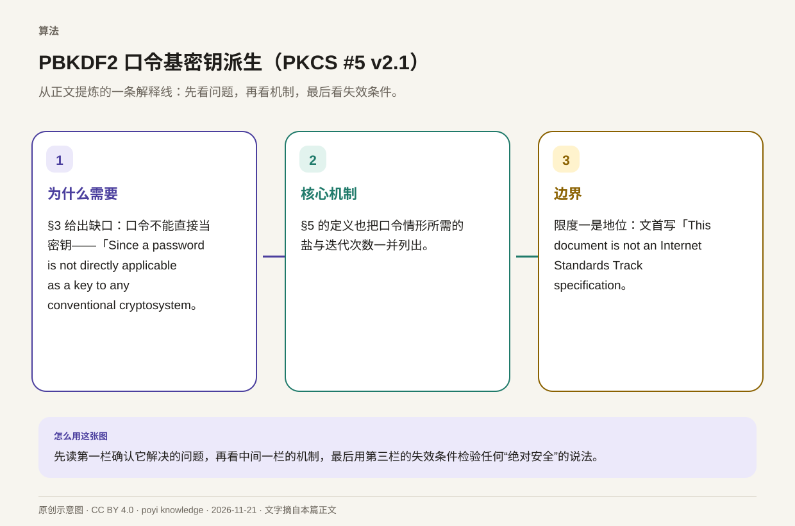
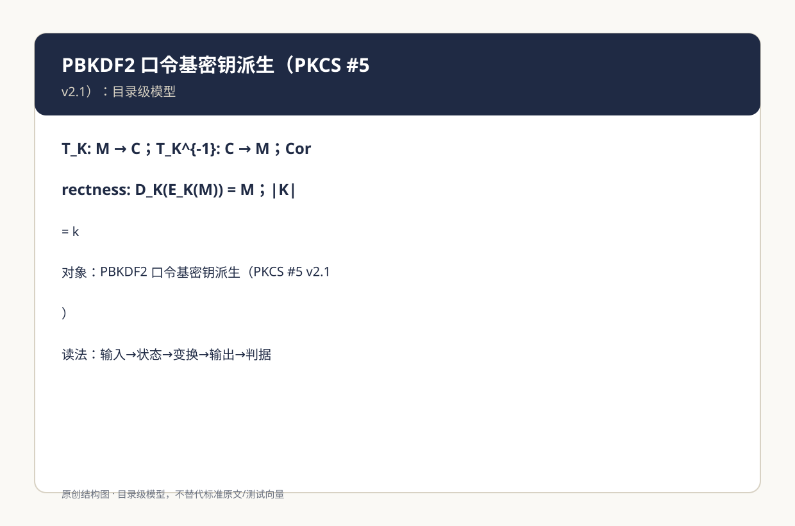

原理与机制
算法：PBKDF2 口令派生（Password-Based Key Derivation Function 2）。摘要自述范围：「This document provides recommendations for the implementation of password-based cryptography, covering key derivation functions, encryption schemes, message authentication schemes, and ASN.1 syntax identifying the techniques.」同段交代出身与归属：「This document represents a republication of PKCS #5 v2.1 from RSA Laboratories' Public-Key Cryptography Standards (PKCS) series.By publishing this RFC, change control is transferred to the IETF.」派生函数自身的定义在 §5：「A key derivation function produces a derived key from a base key and other parameters.」并限定口令情形：「In a password-based key derivation function, the base key is a password, and the other parameters are a salt value and an iteration count, as outlined in Section 3.」范围句同时说明文内不止一种产物：派生函数、加密方案、消息认证方案以及标识这些技术的 ASN.1 语法都在其中，PBKDF2 只是 §5 所列两个函数之一；§5 的定义也把口令情形所需的盐与迭代次数一并列出。

为什么重要
§3 给出缺口：口令不能直接当密钥——「Since a password is not directly applicable as a key to any conventional cryptosystem, however, some processing of the password is required to perform cryptographic operations with it.」风险在取值空间：「Moreover, as passwords are often chosen from a relatively small space, special care is required in that processing to defend against search attacks.」§1 说明建议面向何处：「The recommendations are intended for general application within computer and communications systems and, as such, include a fair amount of flexibility.」并点名首要用例：「They are particularly intended for the protection of sensitive information such as private keys as in PKCS #8」。两句给出同一因果：口令往往取自相对较小的空间，原文因此要求加工环节对此特别留意（措辞是 often、relatively 与 special care is required，而非绝对断言），盐与迭代次数因此成为本文的两个可调参数；§1 又把首要用例落在私钥这类敏感信息的保护上。
应用与实例
义务落在参与方。§4.1 对加密方：「In password-based encryption, the party encrypting a message can gain assurance that these benefits are realized simply by selecting a large and sufficiently random salt when deriving an encryption key from a password.」推荐值为「It should be at least eight octets (64 bits) long.」§4.2 对迭代次数转引 SP 800-132：「The iteration count shall be selected as large as possible, as long as the time required to generate the key using the entered password is acceptable for the users.」与「A minimum iteration count of 1,000 is recommended.」§5 给出选型：「Two functions are specified in this section: PBKDF1 and PBKDF2.」并写明「PBKDF2 is recommended for new applications; PBKDF1 is included only for compatibility with existing applications and is not recommended for new applications.」§5.2 说明 PBKDF2 的构造依赖：「PBKDF2 applies a pseudorandom function (see Appendix B.1 for an example) to derive keys.」四处义务的层级分明：盐的随机性与长度由发起方负责，但八字节只是 should 级；迭代次数在转引 SP 800-132 的文字里写作 shall，同段的最低值仍是 recommended；函数选型把 PBKDF1 留在兼容位置，PBKDF2 的强度则取决于所选 PRF。

边界与攻击面
限度一是地位：文首写「This document is not an Internet Standards Track specification; it is published for informational purposes.」页眉 Category 为 Informational，并声明「This document also obsoletes RFC 2898.」限度二是范围：§1 把口令认证与密钥建立协议排除在外——「Other cryptographic techniques based on passwords, such as password-based key entity authentication and key establishment protocols [BELLOV] [JABLON] [WU] are outside the scope of this document.」并明确不教口令怎么选：「Guidelines for the selection of passwords are also outside the scope.」限度三是派生结果的上限：§5.2 说「However, the maximum effective search space for the derived key may be limited by the structure of the underlying pseudorandom function.」§8 给出整体判断：「Password-based cryptography is generally limited in the security that it can provide, particularly for methods such as those defined in this document where offline password search is possible.」并要求口令本身选得好、存得好。
历史与背景
页眉按行连读为「Internet Engineering Task Force (IETF) K.Moriarty, Ed.」、「Request for Comments: 8018 Dell EMC」、「Obsoletes: 2898 B.Kaliski」、「Category: Informational Verisign」与「ISSN: 2070-1721 A.Rusch RSA January 2017」，即编辑为 Kathleen Moriarty，作者另含 Burt Kaliski 与 Andreas Rusch，日期 2017 年 1 月，类别 Informational，并取代 RFC 2898。版权行为「Copyright (c) 2017 IETF Trust and the persons identified as the document authors.」§1 另记 PKCS 版本的取代关系：「This document supersedes PKCS #5 version 2.0 [RFC2898] but includes compatible techniques.」门板事实合起来是：编号、编辑与两位合著者及其机构、日期 January 2017、类别 Informational、Obsoletes 行与版权年份；§1 另给出一条对 PKCS #5 版本线的取代关系。
逐步示例与核验
形式模型与复算步骤
[C=E_K(P;r),\qquad P=D_K(C)]
PBKDF2 口令派生的公开参数、密钥/随机数与消息；变量说明：P 明文，C 密文，K 密钥，r 随机化参数。1.按算法规范编码输入。2.在密钥控制下执行轮函数。3.输出密文并检查长度与格式。边界：公式只覆盖已登记的参数与假设；参数取值、标准版本和实现细节仍以来源为准。
参考出处
- Wikipedia search entry for PBKDF2 口令派生. https://zh.wikipedia.org/w/index.php?search=PBKDF2%20%E5%8F%A3%E4%BB%A4%E6%B4%BE%E7%94%9F
- Handbook of Applied Cryptography (Menezes, van Oorschot, Vanstone). https://www.cacr.math.uwaterloo.ca/hac/
- RFC 8018: PKCS #5: Password-Based Cryptography Specification v2.1. https://www.rfc-editor.org/rfc/rfc8018